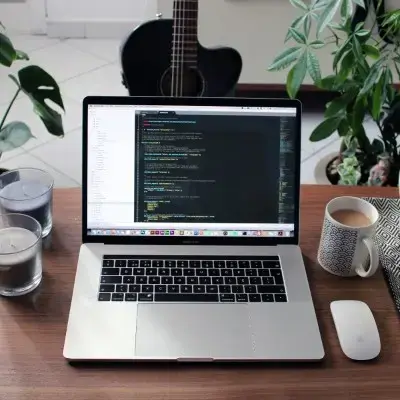

Disponible pour des missions
Bonjour !
Je suis Pricillia
Développeuse fullstack en reconversion, passionnée par la création de solutions web innovantes et accessibles.
Disponible pour des missions
Développeuse fullstack en reconversion, passionnée par la création de solutions web innovantes et accessibles.
Je m'appelle Pricillia EDOU EDOU. Après une carrière réussie dans le domaine de l'audit et contrôle de gestion, j'ai décidé de suivre ma passion et de me reconvertir en développeuse web. Cette transition m'a permis de combiner mon amour pour la technologie et ma créativité pour donner vie à vos idées. Mon objectif principal est de créer des solutions web accessibles et innovantes, car je crois fermement que l'innovation n'a de limite que celle que l'on se fixe. Je m'efforce de rendre le web plus inclusif en intégrant des pratiques de développement accessibles dans tous mes projets. En tant que développeuse web, j'ai acquis une solide expérience en HTML, CSS, JavaScript, et divers frameworks et bibliothèques modernes. Je suis constamment en quête de nouvelles compétences et technologies pour rester à la pointe du développement web. Je suis impatiente de collaborer avec vous et de transformer vos idées en réalité numérique.